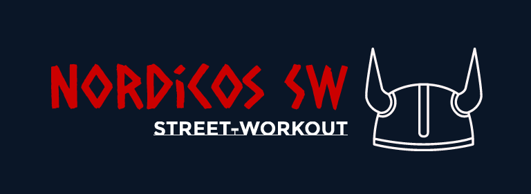

Quer sair do tédio, e ao mesmo tempo fazer algo produtivo?
Não tem tempo, estrutura, capital ou simplesmente não sabe o que fazer para ter um diferencial?
vem comigo, nesse site irei te mostrar como!:


Meu Nome é Kaiqui e juntamente com a K-Physics, vou te convencer a entender
a complexidade e facilidade desse esporte tão pouco conhecido que se chana Street-workout!
Quer sair do tédio, e ao mesmo tempo fazer algo produtivo?
Não tem tempo, estrutura, capital ou simplesmente não sabe o que fazer para ter um diferencial?
vem comigo, nesse site irei te mostrar como!:
você sabe o que é Street-workout?
vou te explicar!
Street-workout é um esporte que vem crescendo desde meados de 2020 na pandemia!
ele surgiu com a intenção de estimular o auto-cuidado, usando da calistenia;
(exercícios fisicos ultilizando apenas do seu corpo e criatividade para cada execução de movimento).
surgindo com a finalidade, de reduzir a probabilidade das pessoas ficarem doentes em casa, e manter a imunidade alta.
vamos ver um pouco sobre isso, onde fazer e por que fazer...
Até Exercícios curtos trazem efeitos benéficos
A atividade física tem efeitos benéficos na sua saúde física e mental,
promovendo o seu bem-estar e aumentando a sua qualidade de vida. Bastam no minimo, 30 minutos de exercício, 5 dias por semana,
para sentir os efeitos não só no corpo,
mas também na mente. A prática de exercício aumenta sua qualidade de vida e a sensação de bem-estar,
melhora a atividade cardiovascular e respiratória,b
ao mesmo tempo que tonifica o seu corpo.

Duas opções simples e que cabe no seu bolso!!
Existem duas formas de treinar tranquilamente sem gastar
nada, a grande diferença são equipamentos de praça.
No HomeWorkout você encontrará apenas o seu corpo
para executar todos os exercícios precisos,
e sua criatividade, para ultilizar o que tem a sua volta a seu favor!